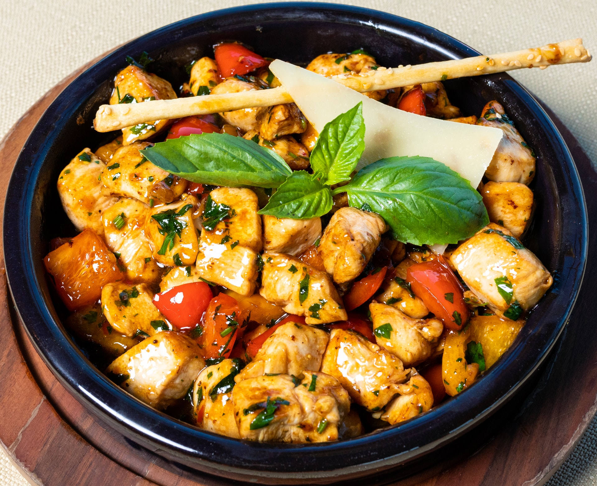

Kenyan Recipes
Chicken Stew
The chicken stew is a delicasy all across Kenya. Here's how to prepare it

Ingredients
- Kienyeji chicken
- Garlic
- Ginger
- Onion
- Tomatoes
- Salt to taste
- C.oil
Procedure
- Boil the chicken with salt, garlic and ginger till tender.
- In a pan heat c.oil till hot.
- Add your boiled chicken in batches.Fry till brown.
- In a sufuria fry onion till it starts browning.
- Add in your chicken and stir
- Add blended tomatoes and cover the sufuria.
- Cook under low heat till tomatoes are fully cooked.
- Add little water. Let it simmer for some minutes
- Gamish with dhania.